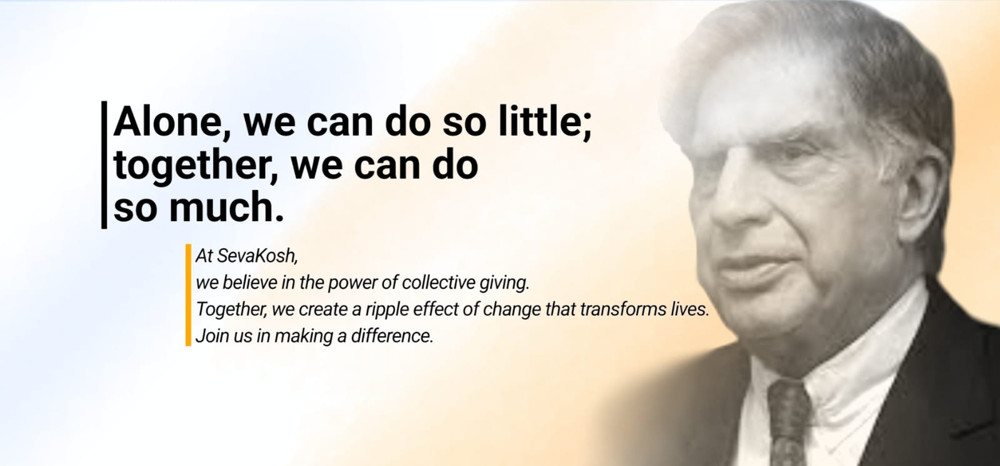

The Heart of Giving
Donations are a driving force for change, bridging the gap between privilege and need. Beyond financial aid, giving nurtures empathy, strengthens communities, and fosters a shared sense of responsibility. It is a reflection of humanity’s highest values—compassion, kindness, and the desire to uplift others.
Why Choose SevaKosh?
True generosity goes beyond intent—it requires trust, transparency, and impact. SevaKosh transforms giving into a seamless and meaningful experience, ensuring that every donation serves its highest purpose.
Vision & Impact
SevaKosh is more than a platform—it is a movement redefining philanthropy with transparency, accountability, and impact. By channeling collective generosity into structured giving, it ensures that every contribution is utilized efficiently, creating meaningful change.